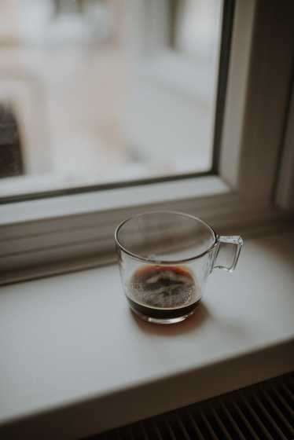
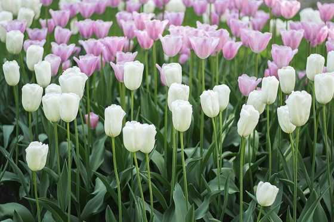
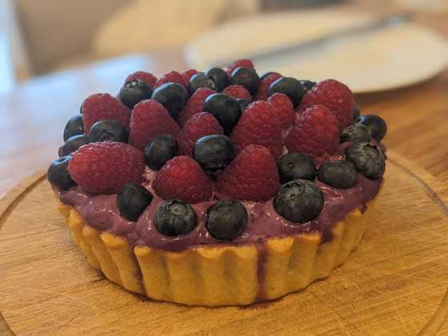

長野県上田市小泉のカフェ
忙しい毎日のなかで、
自分にひとつ、やさしいごほうびを。
乳製品・卵・白砂糖を使わないお菓子と軽食で、ほっとできる時間を。
お店の由来・想い
エステサロンのオーナーが開いた、ほっとできるカフェ。
紹介記事によると、オーナーの柳澤由美子さんは上田市内でエステサロンを運営しています。エステに加えて、ほっとできる時間を過ごせるカフェも開きたいと考え、友人の協力を得て2024年夏にオープンしました。
店名の「ごほうび」には、忙しい日々のなかで、おいしいお菓子とともに自分へのごほうびの時間を過ごしてほしいという願いが込められているそうです。店内は2人掛け・1人掛けのテーブルとカウンターのみの、落ち着いた空間と紹介されています。
情報源: Weekly上田(2025年3月の紹介記事) / Instagram
上記以外の言い回しは制作側の表現です。



メニュー
体にやさしい、お菓子と軽食。
乳製品不使用卵不使用白砂糖不使用
紹介記事によると、乳製品・卵・白砂糖を使わないお菓子と軽食を提供しており、定番のケーキのほか、旬のフルーツを使った季節のデザートや玄米タルトが人気とのことです。詳しいメニュー・価格は準備中です(最新情報はInstagramをご覧ください)。
下の写真はイメージのフリー素材で、お店の商品ではありません。




口コミ
お客様の声(イメージ例)
イメージ例
体にやさしいお菓子だと聞いて立ち寄りました。ほっとひと息つけて、自分へのごほうびになりました。
イメージ例
カウンター席で、静かにコーヒーとデザートを楽しめました。また季節のデザートを食べたいです。
イメージ例
駐車場があって車で行きやすく、ゆっくり過ごせました。
上記は制作側が作成したイメージ例で、実在のお客様の声ではありません。